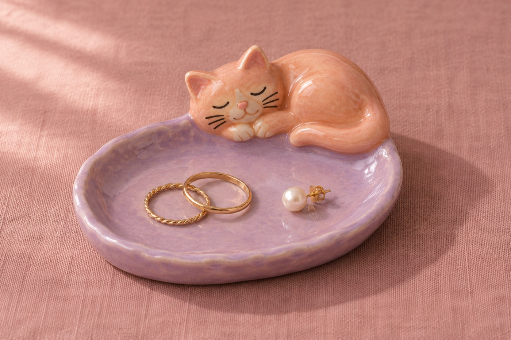
Хранитель колечек
2300 ₽ · блюдце для украшений
Выберите котика из каталога или пришлите фото своего,
и я сделаю его маленькую копию.
Пришлите фотографию кота. Мастер слепит его в той же позе и повторит окрас. Если хотите другую позу или детали, расскажите об этом при заказе.
от 3200 ₽
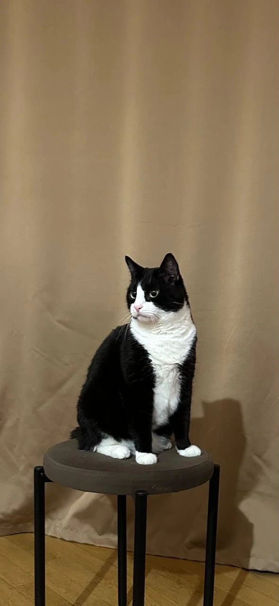
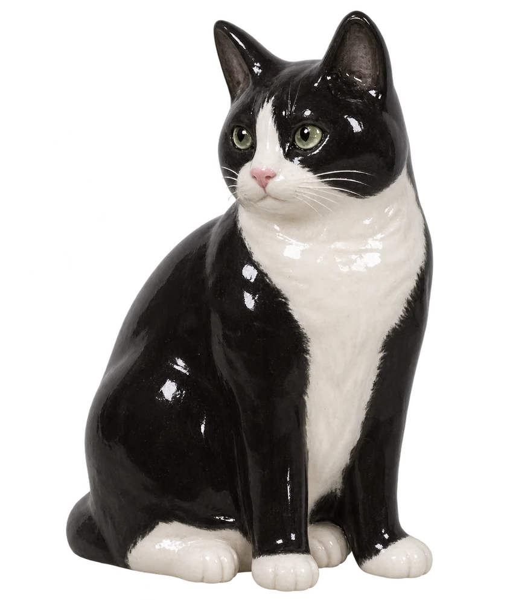
Котика можно сделать другого цвета — например, в окрасе вашего питомца. Просто пришлите мне фото при заказе.

2300 ₽ · блюдце для украшений
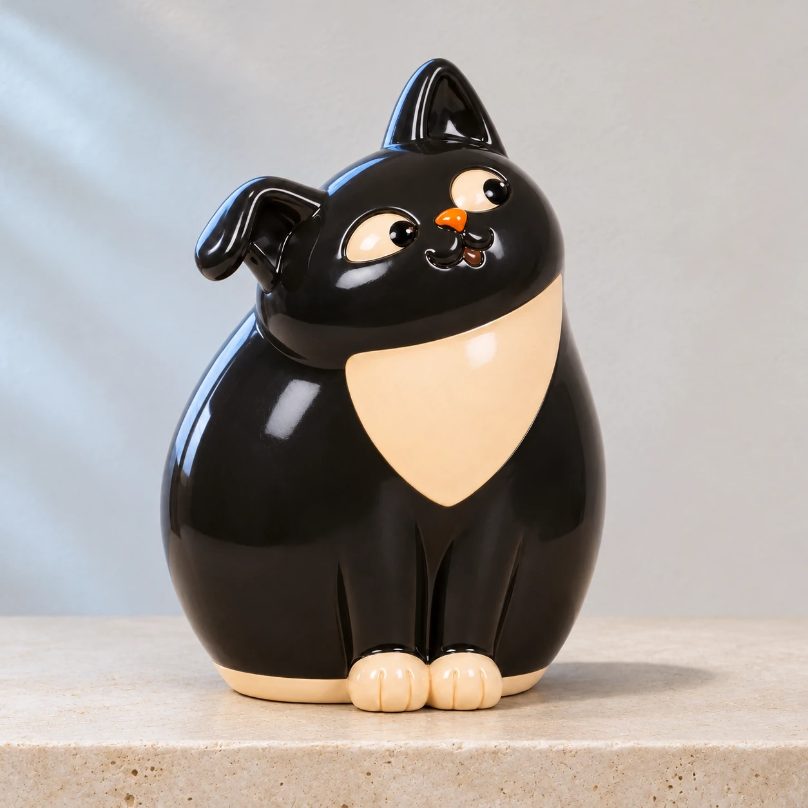
1800 ₽
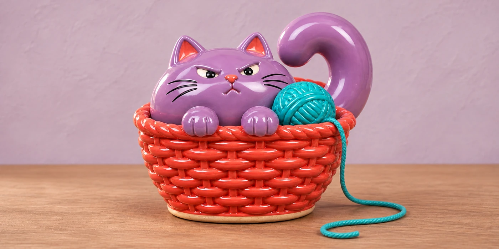
2600 ₽
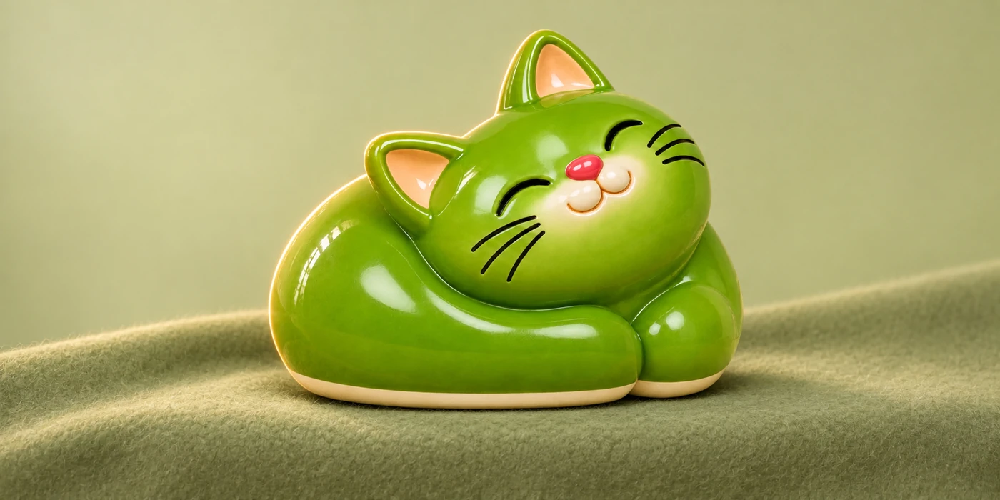
1800 ₽
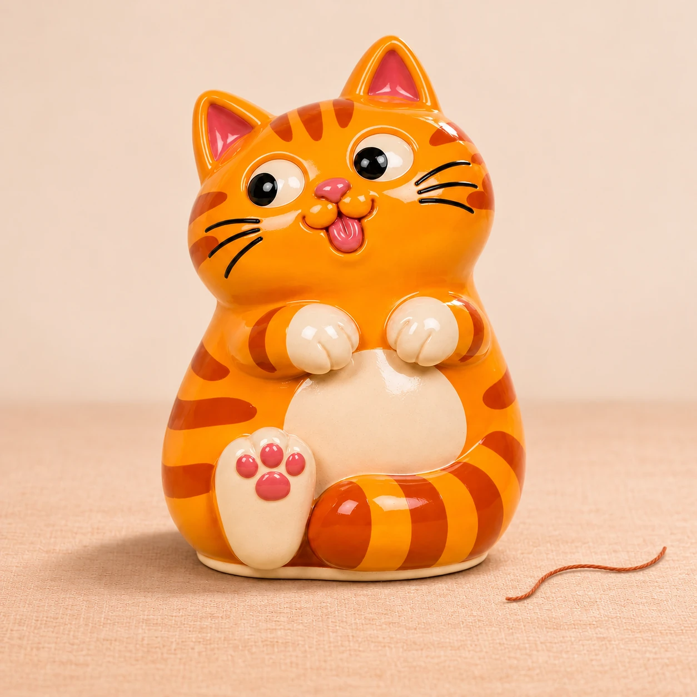
2000 ₽
Сначала расписываю жабке спинку и животик. Потом добавляю глазки, улыбку и румяные щёчки. У каждой получается своя мордочка.
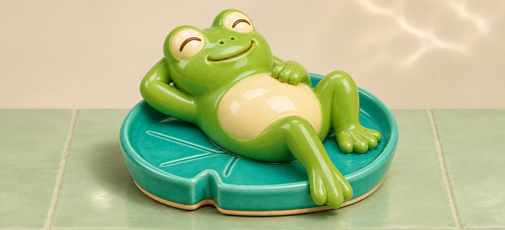
2400 ₽ · подставка для колец
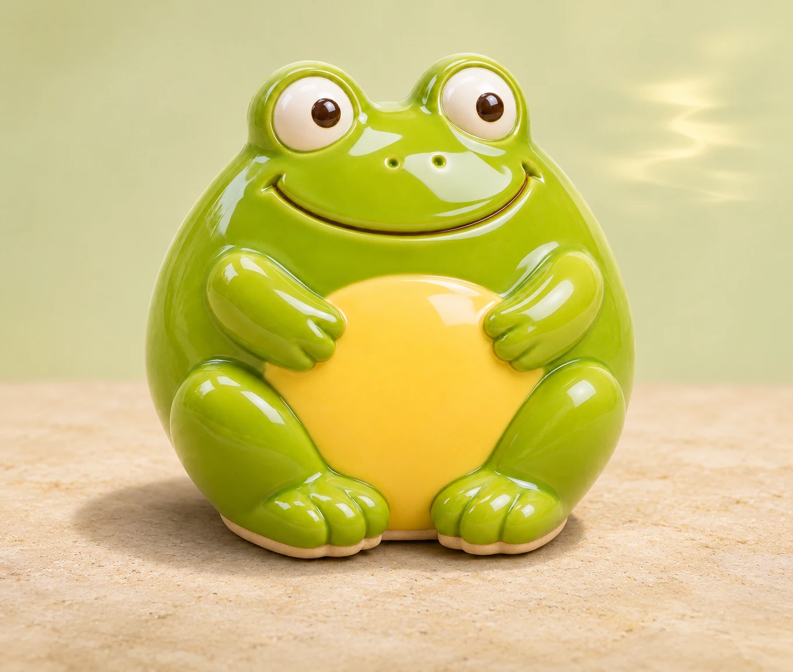
1500 ₽
У Ёжика расписываю каждую иголку, у Бараша — каждый завиток. А ещё очки, брови и щёчки: из этих мелочей и складывается знакомая мордочка.
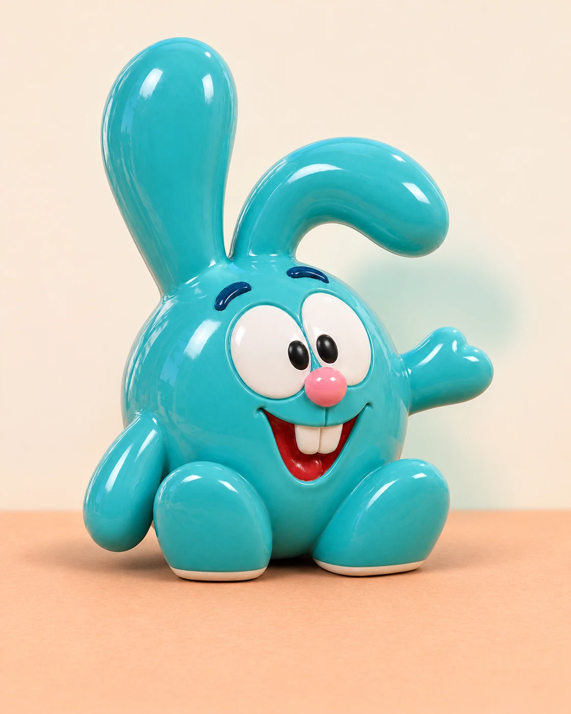
2200 ₽
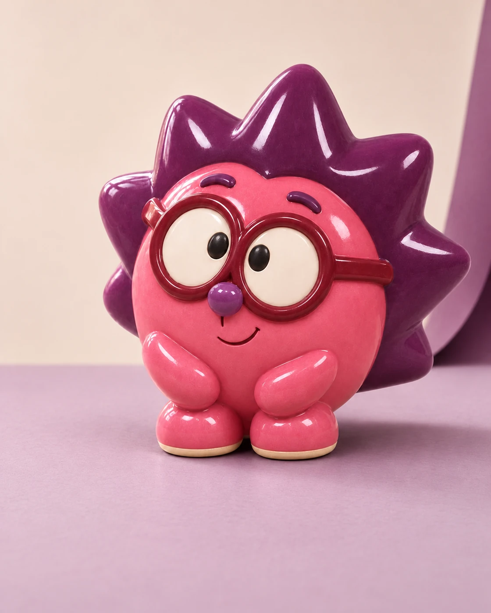
2200 ₽
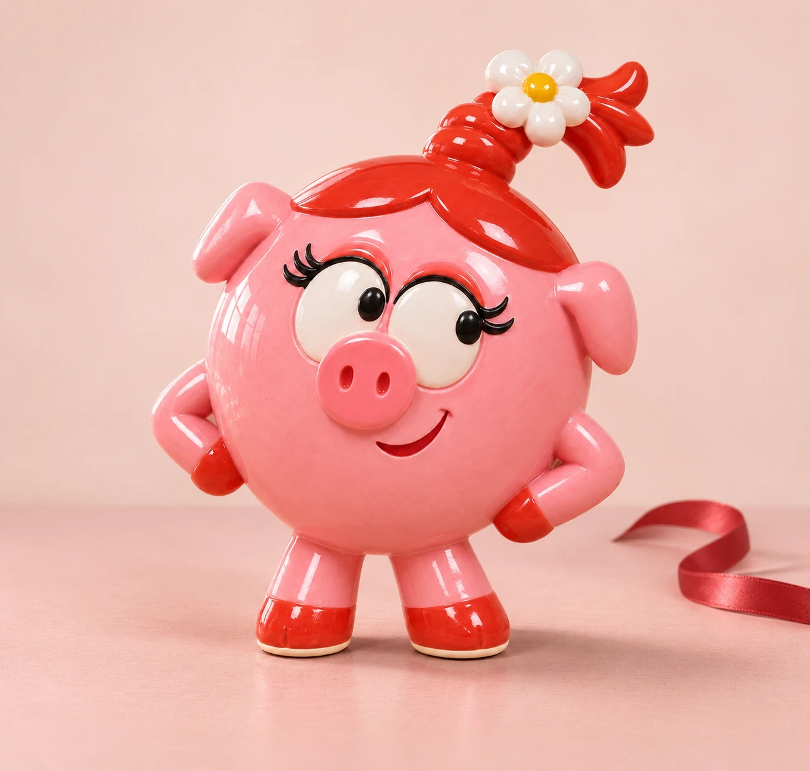
2400 ₽
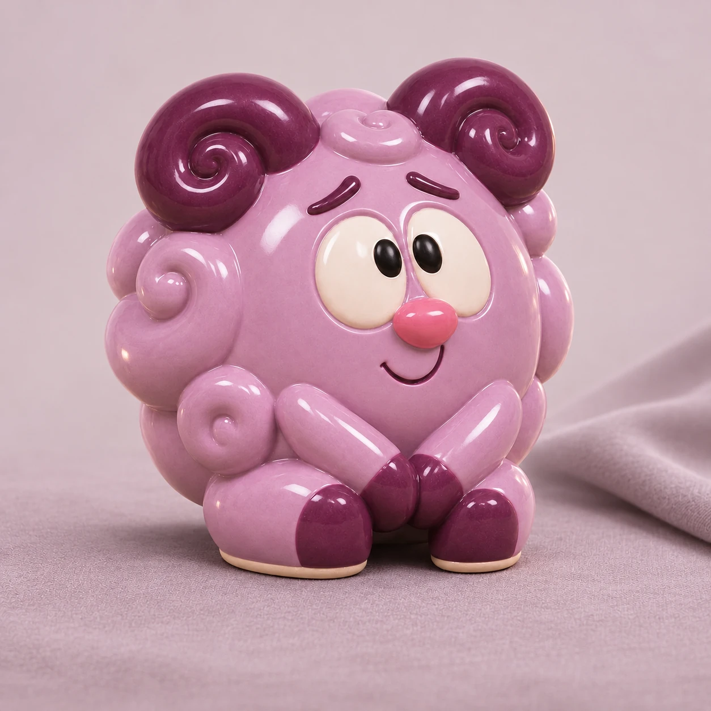
2400 ₽
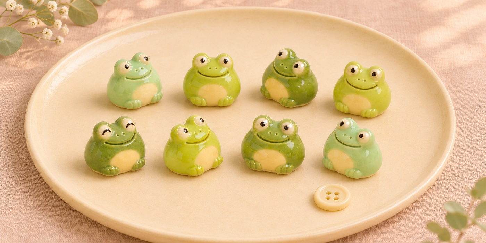
300 ₽ / шт.
Фигурки лепят из глины, расписывают вручную и покрывают глазурью.
Для котика по фотографии мастер лепит отдельную форму, чтобы повторить позу вашего питомца. Готовую фигурку расписывает по снимку.